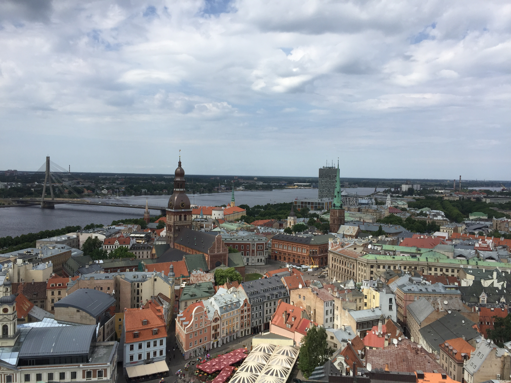

Riga
Latvia is my home country and I was born in the capital, Riga. After Latvia regained its independence on May 4th of 1990 and the break up of the Soviet Union in 1991, I immigrated to the United States. While I've lived in the United States for most of my life, I still participate in my Latvian culture and heritage. I've been part of Latvian community centers and song and dance festivals from our culture all over North America, and of course back in Latvia. In fact, I've danced for so many years that I've officially become the dance teacher for the Los Angeles Latvian Community Center and will be leading the group in Toronto, Canada this year.